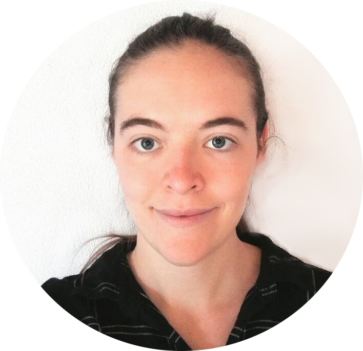
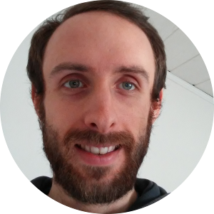
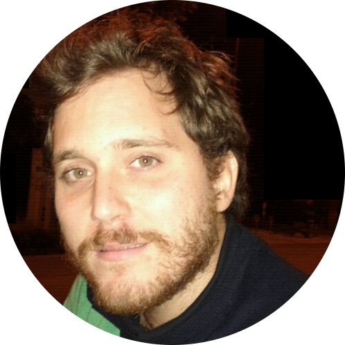
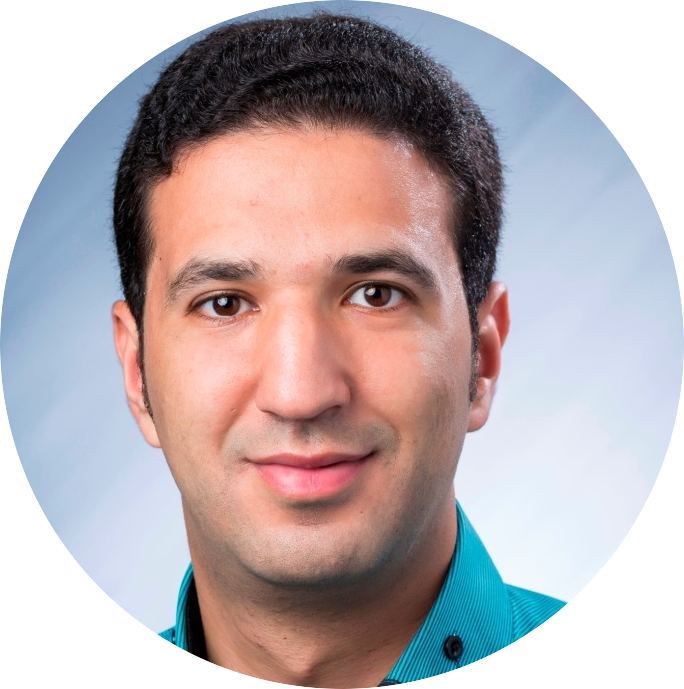
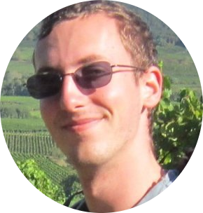

Alumni
Davide Berardi
Visiting PhD student (University of Bologna) working on the Security of Industrial Networks.
Lorenzo Rinieri
Visiting MSc student (University of Bologna) working on certificate management in the OPC UA ecosystem.

Anne Müller
Anne worked as graduate researcher on the security of the OPC UA ecosystem.
Amir Heinisch
Amir wrote his BSc thesis on secure motor controllers in 20/21.
Max Bäumler
Max wrote his BSc Thesis about security of a (to be disclosed later) PLC ecosystem in 2020.

Nils Glörfeld
Nils was a student helper in 2019, working on Bluetooth security.
Christian Geldermann
Christian wrote his BSc Thesis about security of ICS in 2020.

Dr. Daniele Antonioli (SUTD)
Daniele was a PhD student from 2015 to 2019. Now: Faculty at EURECOM
Dr. Rajib Ranjan Maiti, PostDoc (IIT Kharagpur)
Rajib was a PostDoc on the ResilIoT project (SUTD) in 2016-2018
Dr. Yan Lin Aung, PostDoc (NTU)
Yan Lin is a PostDoc on the ResilIoT project (SUTD) since March 2017
Dr. Wang Xueou, PostDoc (NUS)
Xueou was a PostDoc on the location privacy project (SUTD) in 2017/2018
Francesco Scandola
Francesco was a Research Assistant on two projects between 2016 and 2018
Ragav Sridharan
Ragav was a Research Assistant between 2017 and 2018
Dominik Breitenbacher
Dominik is a Research Assistant on the ResilIoT project (SUTD) since 2017

Amit Tambe
Amit was a Research Assistant on the ResilIoT project (SUTD) between 2016 and 2018
Swetha Rajagopalan
Swetha was a Research Intern on the ResilIoT project (SUTD) in 2017

Dr. Aymen Fakhreddine
Aymen was a Visiting PhD Student from IMDEA Networks Institute in 2017
Ahnaf Siddiqi
Ahnaf was a Research Assistant from 2016-2017
Sandra Siby
Sandra was a Research Assistant from 2016-2017. Now: PhD student at EPFL
Giuseppe Bernieri (Roma Tre University)
Sandra was a Visiting PhD student in 2017. Now: PostDoc at Uni Padova

Anand Agrawal, Research Assistant
Anand was a Research Assistant in 2016. Now: Research Assistant at NYU-Abu Dhabi
Dr. Marco Rocchetto (U. Verona)
Marco was a PostDoc in 2015-2016. Now: Senior Research with ALES, United Technologies Research Center
Naman Govil (IIIT Hyderabad)
Naman was a Research Intern in 2016. Now: PhD student at Georgia Tech
Dr. David Urbina (UT Dallas)
David was a Visiting PhD student in 2015, working on attack and detection in the Fieldbus, author of SWaT attack. He is now working with Intel.
Pierre Gaulon (ENSEIRB-MATMECA, Bordeaux)
Pierre was a Research student in 2015, working on Bro extensions for attack detection for EtherNet/IP.

Nicolas Iooss (with Akheros/Corps des mines, Paris)
Nicolas was a Research student in 2015, working on Scapy tools and MitM attacks for EtherNet/IP in SWaT